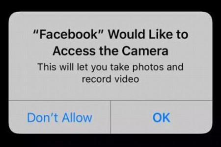

Inleiding
Digitale veiligheid wordt op allerlei manieren bedreigd. Aanvaller richten dan vooral op de zwakke plekken:
- zwakheden in de architectuur
- zwakheden in de communicatie
- zwakheden bij gebruikers.
Voor elk van deze zwakheden is er een bepaalde manier waarop er misbruik van wordt gemaakt wat u hieronder
kunt lezen.
Zwakheden in de architectuur
In de architectuur zijn 3 lagen:
- fysieke laag
- logische laag
- toepassingen laag
Zwakheden in de architectuur
Een zwakheid in de architectuur maakt gebruik van een tekortkoming in een van deze lagen, of de communicatie tussen 2 lagen. Vaak had de maker of ontwerper die fout niet opgemerkt bij het maken van de lagen of de communicatie daartussen.Een voorbeeld is de camera op uw telefoon. Als een app de camera wilt gebruiken komt er een pop-up om toestemming te vragen, soms verschijnt dat niet waardoor een aanvaller kan meekijken met uw camera zonder dat u het doorheeft.

Zwakheden in de architectuur
Een lek in een website of een app betekent dat een kwaadwillige partij een zwakheid heeft gevonden in de architectuur en willen daarmee schade aanrichten.Soms veranderen hackers data dat kunnen ze als de data basisverbinding slecht beveiligd is, ze gebruikten dan een techniek die SQL-injecties worden genoemd (daarover is hier meer te vinden.)
Zwakheden in de architectuur kunnen makkelijk opgespoord worden door het te testen. Dan gaat iemand zelf de architectuur aanvallen en als diegene iets vindt, meld diegene dat zodat het kan worden aangepast.
Zwakheden in de communicatie
Verschillende apparaten zijn met elkaar verbonden door bijvoorbeeld het internet. Dit moet veilig gebeuren
zodat privé-informatie enkel zichtbaar is voor u en de website waarmee u het deelt. Als het niet veilig is
kan er een aanval gebruiken zoals de man-in-the-middel aanval
 Bij een man-in-the-middel aanval wordt de verbinding tussen 2 apparaten afgeluisterd, dit kunt u
niet doorhebben. Vooral vroeger werd deze aanval veel gebruikt via openbare wifi-netwerken.
Bij een man-in-the-middel aanval wordt de verbinding tussen 2 apparaten afgeluisterd, dit kunt u
niet doorhebben. Vooral vroeger werd deze aanval veel gebruikt via openbare wifi-netwerken.
Zodat internetverkeer goed geregeld is, zijn er 2 protocollen, het HTTP en het HTTPS protocol
. De S in HTTPS staat voor secure hiermee kan er een beveiliging worden opgezet tussen cliënt
en een server. Die verbinding is nog wel af te luisteren maar het is beveiligd met een encryptie en dus
onleesbaar. HTTP is een verplichting voor apps om te volgen en dus is het veilig om te verbinden met
onbekende wifi-netwerken.
Om HTTPS mogelijk te maken, moet de beheerder van een website een SSL-certificaat installeren. Dit
certificaat bevat gegevens van wie de website is, zo weet de cliënt wie er achter een server zit. Als cliënt
hoeft u dat niet te hebben. Als dat toch wel moet betekend dat, dat u moet inloggen als gebruiker. Als u
zeker wilt weten dat de website een SSL-certificaat heeft, kunt u dat controleren door te kijken of er een
slotje is bij de adresbalk.
End-to-end encryptie is een vorm van encryptie waar het de gegevens versleutelt voordat ze op het
internet gaan, alleen u en de ontvanger krijgt de sleutel om het te ontgrendelen. Op deze manier krijgt een
hacker niet alle gegevens via een server.
Zwakheden bij gebruikers
Misschien wel de grootste zwakte ligt bij onszelf. Het bekendste daarvan is hoe wij omgaan met
wachtwoorden. (een voorbeeld daarvan is de zien in deze video) |
Ook gebruiken mensen vaak een te makkelijk wachtwoord. De meest voorkomende zijn:
| Wereldwijd | Nederland |
| 1. 123456 | 1. admin |
| 2. admin | 2. pasw00rd |
| 3. 12345678 | 3. 123456 |
| 4. 123456789 | 4. smallville 123 |
| 5. 1234 | 5. paswoord |
- welkom (en variaties daarop)
- voetbal
- Amsterdam (of andere grote steden)
- feyenoord (of andere grote clubs)
Brute force is een manier waarop hackers uw wachtwoord gaan raden tot het goed is. Dit gebeurt met speciale programma's die duizenden wachtwoorden invoeren per seconde. Om zwakke wachtwoorden te voorkomen stellen websites soms eisen aan een wachtwoord. Hieronder kunt u lezen hoe uw wachtwoorden het veiligste blijven:
- Meer tekens gebruiken (hoi -> hallo)
- Meer verschillende soorten tekens (hallo -> H4ll0_08!)
- Geen voor de hand liggende woorden gebruiken (H4ll0_08 -> C3lkern_tj3s08!)
- gebruikt voor elke website een ander wachtwoord
- vervang uw wachtwoorden jaarlijks
Sommige websites geven de optie om een persoonlijke vraag in te stellen voor als u uw wachtwoord vergeet, doe dit niet! Deze antwoorden zijn makkelijk te vinden door het gebruik van sociale media.
Wilt u weten of uw gegevens zijn gehacked dat is dan te kijken op deze website
Technieken
Hackers gebruiken vooral de volgende technieken om achter persoonlijke gegeven te komen:
- social engineering
- phishing
- malware
Social engineering
Social engineering is geen digitale techniek maar een methode om mensen te bewerken. Dit
doen ze door bijvoorbeeld zich voor te doen als iemand anders, van de bank bijvoorbeeld. Dit kan
gaan via SMS, E-mail of een telefoongesprek.
Phishing
Phishing wordt vaak gebruikt in combinatie met social engineering . Bij deze techniek
wordt u via een E-mail naar een website gelokt als u hier inlogt hebben ze uw gegevens van die
website. Dat komt omdat de website fake was.
Malware
Malware is een samenvoeging van de woorden malicious en software wat dus letterlijk
kwaadaardige software betekent. de meest voorkomende vormen en soorten zijn:
- trojan horse
- worm
- virus
- spyware
- adware
- ransomware
Vaak wordt malware gebruikt voor aanvallen via een zogenoemde zero day kwetsbaarheid . Dit
zijn kwetsbaarheden of zwakke plekken in software die nog niet bekend zijn bij de ontwikkelaar van
de software.
Over al deze 6 vormen is hieronder meer informatie.
Trojan horse
De naam is afgeleid van een bekend verhaal uit de Griekse oudheid. Ze kregen een groot houten
paard, het leek een cadeau. Maar er zaten soldaten in verstopt die hierdoor de stad in waren
gekomen.
Als u een bijlagen download heeft u het paard binnengelaten dus de trojan is
geactiveerd. Vaak wordt een trojan verspreid door mensen die nietsvermoedend doorsturen.
Worm
Een worm verspreidt zichzelf en wordt dus niet door uzelf geactiveerd. in 2003 was er een
worm met het bericht billy gates why do you make this possible? Stop making money and fix your
software. .
Dit was een bericht aan Bill Gates, het was de bedoeling om servers aan te vallen maar door een fout
viel het ook nieuwere systemen aan.
Ook was er op 4 mei 2000 een ILOVEYOU worm die binnen 10 dagen 50 miljoen systemen had
geïnfecteerd (dat was 10% van alle systemen wereldwijd)
Virus
Een virus is geen zelfstandig programma zoals een worm. Een virus besmet een bestaande
software. De besmette software richt schade aan en verspreidt zich naar andere computers.
Spyware en Adware
Spyware is een type malware. dat informatie over het computergebruik probeert te
achterhalen dit wordt vervolgens doorgegeven aan de maker van de spyware. informatie waarnaar
spyware zoekt is:
- geïnstalleerde programma’s
- bezochte websites
- welke e-mails worden verstuurd
- alle toetsenbordaanslagen
Spyware gaat aan als de computer aan gaat.
Adware werkt anders. ad staat voor advertentie Adware zorgt dus voor het
weergeven van advertenties.
Adware en spyware worden vaak gezien als 1 ding omdat het bijna altijd samenwerkt.
Ransomware
Ransomware dringt vaak binnen als trojan horses of door middel van een worm.
Ransomware versleutelt bestanden waardoor die niet meer te gebruiken zijn, daarna komt er een
melding dat u een geldbedrag moet betalen om de toegang terug te krijgen.
Het wordt aangeraden om dat niet te doen, omdat het niet zeker is dat u de toegang daadwerkelijk
terug krijgt en omdat ransomware hierdoor een lucratieve methode wordt voor internetcriminelen
om aan geld te komen.
bij een ransomware-aanval wordt ook vaak gebruikgemaakt van tijdsdruk. Dit heeft het
effect dat mensen sneller meer geld overmaken. Tegenwoordig is het steeds makkelijker om fouten
tegen te komen in de ransomware waardoor mensen hun bestanden terug kunnen krijgen zonder te
betalen.
Hackers gebruiken vooral de volgende technieken om achter persoonlijke gegeven te komen:
- social engineering
- phishing
- malware
Social engineering
Social engineering is geen digitale techniek maar een methode om mensen te bewerken. Dit doen ze door bijvoorbeeld zich voor te doen als iemand anders, van de bank bijvoorbeeld. Dit kan gaan via SMS, E-mail of een telefoongesprek.
Phishing
Phishing wordt vaak gebruikt in combinatie met social engineering . Bij deze techniek wordt u via een E-mail naar een website gelokt als u hier inlogt hebben ze uw gegevens van die website. Dat komt omdat de website fake was.
Malware
Malware is een samenvoeging van de woorden malicious en software wat dus letterlijk
kwaadaardige software betekent. de meest voorkomende vormen en soorten zijn:
- trojan horse
- worm
- virus
- spyware
- adware
- ransomware
Vaak wordt malware gebruikt voor aanvallen via een zogenoemde zero day kwetsbaarheid . Dit
zijn kwetsbaarheden of zwakke plekken in software die nog niet bekend zijn bij de ontwikkelaar van
de software.
Over al deze 6 vormen is hieronder meer informatie.
Trojan horse
De naam is afgeleid van een bekend verhaal uit de Griekse oudheid. Ze kregen een groot houten
paard, het leek een cadeau. Maar er zaten soldaten in verstopt die hierdoor de stad in waren
gekomen.
Als u een bijlagen download heeft u het paard binnengelaten dus de trojan is
geactiveerd. Vaak wordt een trojan verspreid door mensen die nietsvermoedend doorsturen.
Worm
Een worm verspreidt zichzelf en wordt dus niet door uzelf geactiveerd. in 2003 was er een
worm met het bericht billy gates why do you make this possible? Stop making money and fix your
software. .
Dit was een bericht aan Bill Gates, het was de bedoeling om servers aan te vallen maar door een fout
viel het ook nieuwere systemen aan.
Ook was er op 4 mei 2000 een ILOVEYOU worm die binnen 10 dagen 50 miljoen systemen had
geïnfecteerd (dat was 10% van alle systemen wereldwijd)
Virus
Een virus is geen zelfstandig programma zoals een worm. Een virus besmet een bestaande
software. De besmette software richt schade aan en verspreidt zich naar andere computers.
Spyware en Adware
Spyware is een type malware. dat informatie over het computergebruik probeert te
achterhalen dit wordt vervolgens doorgegeven aan de maker van de spyware. informatie waarnaar
spyware zoekt is:
- geïnstalleerde programma’s
- bezochte websites
- welke e-mails worden verstuurd
- alle toetsenbordaanslagen
Spyware gaat aan als de computer aan gaat.
Adware werkt anders. ad staat voor advertentie Adware zorgt dus voor het
weergeven van advertenties.
Adware en spyware worden vaak gezien als 1 ding omdat het bijna altijd samenwerkt.
Ransomware
Ransomware dringt vaak binnen als trojan horses of door middel van een worm.
Ransomware versleutelt bestanden waardoor die niet meer te gebruiken zijn, daarna komt er een
melding dat u een geldbedrag moet betalen om de toegang terug te krijgen.
Het wordt aangeraden om dat niet te doen, omdat het niet zeker is dat u de toegang daadwerkelijk
terug krijgt en omdat ransomware hierdoor een lucratieve methode wordt voor internetcriminelen
om aan geld te komen.
bij een ransomware-aanval wordt ook vaak gebruikgemaakt van tijdsdruk. Dit heeft het
effect dat mensen sneller meer geld overmaken. Tegenwoordig is het steeds makkelijker om fouten
tegen te komen in de ransomware waardoor mensen hun bestanden terug kunnen krijgen zonder te
betalen.
- geïnstalleerde programma’s
- bezochte websites
- welke e-mails worden verstuurd
- alle toetsenbordaanslagen
Spyware gaat aan als de computer aan gaat.
Adware werkt anders. ad staat voor advertentie Adware zorgt dus voor het weergeven van advertenties.
Adware en spyware worden vaak gezien als 1 ding omdat het bijna altijd samenwerkt.
Het wordt aangeraden om dat niet te doen, omdat het niet zeker is dat u de toegang daadwerkelijk terug krijgt en omdat ransomware hierdoor een lucratieve methode wordt voor internetcriminelen om aan geld te komen.
bij een ransomware-aanval wordt ook vaak gebruikgemaakt van tijdsdruk. Dit heeft het effect dat mensen sneller meer geld overmaken. Tegenwoordig is het steeds makkelijker om fouten tegen te komen in de ransomware waardoor mensen hun bestanden terug kunnen krijgen zonder te betalen.